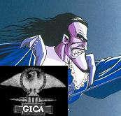

Forums galactiques > Taverne galactique : lieu de discussion informel > à propos de la CB
Pages : 1
| Mystikozen Réputation à la taverne : 0  16/05 ETU 15:20 | Score : 0 Détails Bonjour
Je suis relativement nouveau sur apocalyosis en tant que commerçant, donc je n'ai pas une longue histoire de l'évolutions des cours de la contrebande. Je voulais savoir si les fluctuations de la contrebande sont fréquentes, et si il arrive souvent des aussi fortes fluctuations des prix. | ||
| Gemnoth-Sinn Réputation à la taverne : 358  16/05 ETU 15:36  | Score : 0 Détails C'est arrivé, mais personne ne pourra dire (a mon avis) si cela se reproduira...
|
Pages : 1
Forums galactiques > Taverne galactique : lieu de discussion informel > à propos de la CB